Adversarial Machine Learning
My learning and research notes of Machine Learning in the adversarial setting.
Notes on Adversarial Machine Learning
1 Formalize Adversarial Attack
Explorative Attacks vs. Causative Attack
Explorative attacks: the attacker influences only the evaluation data.
The attempts to passively circumvent the learning mechanism to explore blind spots in the learner
… to craft intrusions so as to evade the classifier without direct influence over the classifier itself
Causative attacks: the attacker attempts to hack the training data as well.
In the following survey, an adversary is usually assumed to be explorative.
Adversary’s Goal
For an input $I_c\in \mathbb R^m$, find a small perturbation $\rho$ to force a classifier $\mathcal C$ to label $\ell$. ((Szegedy et al. 2014) $$ \min |\rho|, s.t.\mathcal C(I_c+\rho) = \ell $$
Another definition is to minimize the loss function on label $\ell$, with perturbation $\rho$ subject to some restriction. $$ \min_{\rho\in \Delta}\mathcal L(I_c +\rho, \ell) $$
- Targeted: Fool the classifier to a specific label $\ell$
- Untargeted: Any $\ell$ different from the origin class suffices.
Adversary’s Strength
An adversary may have access to some of the knowledges below:
Training dataset
The feature representation of a sample (a vector in the feature space)
Learning algorithm of the model (e.g. architecture of a neural network)
The whole trained model with parameters
Output of the learner
If an attack only requires input-output behavior of the model, it is referred to as a black box attack. (In some looser definition, the output of loss function is also accessible.)
Otherwise, it is a white box attack.
2 Typical Attacks for Classification
Box-constrained L-BFGS (Szegedy et al. 2014)
- The origin goal (1) of an adversary is generally too hard a problem for optimization. It is helpful to transform it into the following form:
$$ \rho_c^* = \min_\rho c|\rho| + \mathcal L(I_c+\rho, \ell), s.t. I_c + \rho\in[0,1]^m $$
- We need to find the minimal parameter $c>0$, such that $\mathcal C(I_c + \rho_c^*) = \ell$. The optimum of problem (3) can be sought using L-BFGS. It is proved that two optimization problem (1) and (3) yield same results under convex losses.
- Szegedy’s paper also suggests an upper bound on unstability only by network architecture. This is done by inspecting the upper Lipschitz constant of each layer: if layer $k$ is $L_k$-Lipschitz, the whole network would be $L = \prod_{k=1}^K L_k$ Lipschitz:
$$ |\phi(I_c) - \phi(I_c + \rho)||\leq L|r| $$
- This bound is usually too loose to be meaningful, but according to Szegedy, it implies that regularization that penalizing each upper Lipschitz bound might help the robustness of the network.
FGSM (Goodfellow et al. 2015)
A linear and one-shot perturbation: $$ \rho = \epsilon \cdot sign(\nabla_x \mathcal L(\theta,x,y)) $$
In this paper, it is shown that:
- Linear models are sufficient for the existence of adversarial attacks, since small perturbation results in a huge variation due to high dimensionality.
- It is hypothesized that it is linearity instead of non-linearity that makes models vulnerable.
The computational efficiency of one-shot perturbation enables adversarial training.
Iterative Methods (Kurakin et al. 2017)
- Basic iterative method: this is essentially a PGD of $\ell^{\infty}$ ball.
$$ I_\rho^{(i+1)} = Clip_\epsilon [I_\rho^{(i)} + \alpha sign(\nabla \mathcal L(\theta, I_\rho^{(i)}, \ell))] $$
- Least-likely-class iterative method:
$$ I_\rho^{(i+1)} = Clip_\epsilon[I_\rho^{(i)}-\alpha sign(\nabla \mathcal L(\theta, I_\rho^{(i)}), \ell_{target})] $$
- where $\ell_{target}$ is the least likely class of prediction.
Jacobian based Saliency Map Attack
- $\ell_0$ norm attack (not read yet)
One Pixel Attack
- Applies differential evolution to generate adversarial examples
- Black box attack: Requires only the predicted likelihood vector, but not the loss function or its gradient.
Carlini and Wagner Attacks
Find objective functions $f$, such that $$ f(I_c + \rho) \leq 0 \text{ iff } \mathcal C(I_c + \rho) = \ell $$ which enables an alternative optimization formulation: $$ \min |\rho| + c\cdot f(I_c + \rho),\ \mathrm{s.t.}\ I_c +\rho\in [0,1]^n $$
An efficient objective function $f$ is found to be $$ f(x) = \max(\max_{i\neq t} Z(x)_i - Z(x)_t, -\kappa), $$ where the classifier is assumed to be: $$ \mathcal C(x) = Softmax(Z(x)). $$ The parameter $\kappa\geq 0$ forces an adversary to find adversarial examples of higher confidence. It is shown that $\kappa$ is positively correlated to the transferability of the adversarial examples found.
Yet another trick is used for the box constraints. Let $x = \frac{1}{2}(\tanh(w)+1)$, so $x$ satisfies $x\in [0,1]$ automatically.
3 Transferability
Transferability: the ability of an adversarial example to remain effective on differently trained models.
A more careful definition (Papernot et al. 2016):
- Intra-technique transferability: consider models trained with the same technique but different parameter initializations or datasets
- cross-technique transferability: consider models trained with different techniques
Transferability empowers black-box attacks: to train a substitute model by querying the classifier as an oracle.
Several methods for data augmentation are proposed by Papernot et al.
Universal Adversarial Perturbations (Moosavi-Dezfooli et al. 2017)
- A perturbation is universal if:
$$ \Pr_{I_c\sim S} (\mathcal C(I_c)\neq \mathcal C(I_c+\rho)) \geq 1-\delta,\ \mathrm{s.t.}|\rho|_p\leq\epsilon $$
For each image x in the validation set, we compute the adversarial perturbation vector $r(x)$… To quantify the correlation between different regions of the decision boundary of the classifier, we define the matrix $N = [\frac{r(x_1)}{|r(x_1)|_2} \dots \frac{r(x_n)}{|r(x_n)|_2}]$
- The author compares the singular values of matrix $N$ with the singular values of a matrix with columns sampled randomly.
- It is explained that a subspace of dimension $d^\prime \ll d$ containing most normal vectors to the decision boundary in regions surrounding natural images.
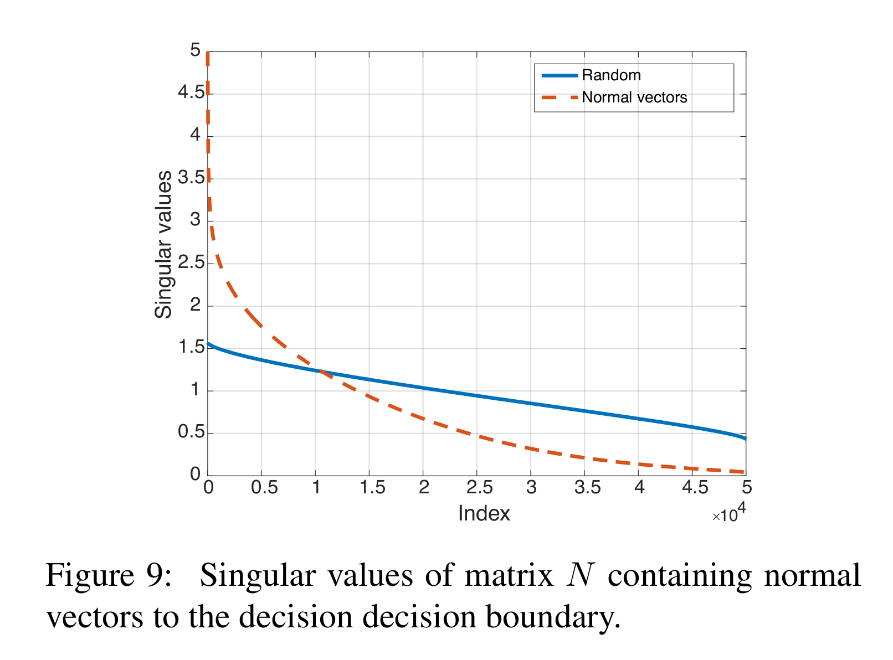
Myth:
Why adversarial examples are so close to any input $x$?
Why adversarial examples looks like random noise?
Why training with mislabeling also yields models with great performance?
I listened to an online report made by Adi Shamir
Assumptions:
- $k$-manifold assumption
- The boundary of a classification network is only pushed to get close to the manifold during training
- Claim: adversarial examples are nearly orthogonal to the manifold.
- Test using generative model!
4 Defenses
1. Adversarial Training
Intuition: to argument the training data with perturbated examples.
Solving the min-max problem $$ \min_\theta \sum_{(x,y)\in S}\max_{\rho\in \Delta} \mathcal L(\theta, x+\rho, y) $$
2. To Detect Adversarial Examples
On Detecting Adversarial Perturbations (Metzen et al. 2017)
- Intuition: to train a small subnetwork for distinguishing genuine data from data containing adversarial perturbation
- Train a normal classifier $\Rightarrow$ Generate adversarial examples $\Rightarrow$ Train the detector
- Worst case: the adversary adapts to the detector:
$$ I_\rho^{(i+1)} = Clip_\epsilon\left{I_\rho^{(i)} + \alpha\Big[(1-\sigma)\cdot sign(\nabla \mathcal L_{classify}(I_\rho^{(i)},\ell_{true}))+\sigma \cdot sign \big(\nabla \mathcal L_{detect}(I_\rho^{(i)})\big)\Big]\right} $$
- where $\sigma$ allows the dynamic adversary to trade off these two objectives.
- Apply the dynamic adversary and the detector alternately.
Detecting Adversarial Samples from Artifacts (Feinman et al. 2017)
A crucial drawback of Metzen’s work: must be trained on generated adversarial examples
An intuition: high dimensional datasets are believed to lie on a ==low-dim manifold==; and the adversarial perturbations must push samples off the data manifold.
Kernel Density estimation: Detect the points that are far away from the manifold. $$ \hat f(x) = \frac{1}{|X_t|}\sum_{x_i\in X_t}k(\phi(x_i),\phi(x)) $$
where $X_t$ is the set of training data with label $t$ (here $t$ means the predicted class).
$k(\cdot,\cdot)$ is the kernel function and $\phi(\cdot)$ maps input $x$ to its feature vector of the last hidden layer.
Another intuition: deeper layers provide more linear and unwrapped manifold.
Bayesian Neural Network Uncertainty: identify low-confidence regions by capturing “==variance==” of predictions
Randomness is considered under dropouts and parameters are sampled for $T$ times. $$ Var(y^*) \approx \frac{1}{T}\sum_{i=1}^T \hat y^* (x^*,W^t)^T\hat y^*(x^*,W^t) - \mathbb E(y^*)^T\mathbb E(y^*) $$
where $y^* = f(x^*)$ is a prediction of test input $x*$.
It is shown that typical adversarial examples do have much different distributions on uncertainty.
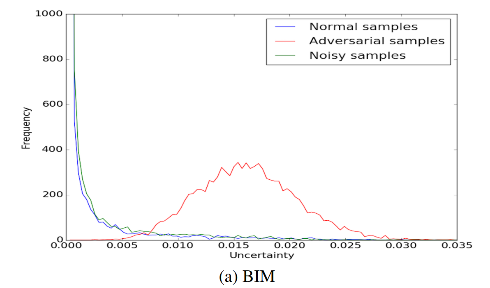
Adversarial Examples Are Not Easily Detected: Bypassing Ten Detection Methods (Carlini et al. 2017)
Analyze 10 proposed defenses to ==detect== adversarial examples
Conclusion: all these defenses are inefficient when an adversary is aware the neural network is being secured with a given detection scheme; and some of the properties claimed for adversarial examples are only due to existing attack techniques.
The 10 defenses can be categorized:
- Train a secondary neural network for detection
- Capture statistical properties
- Perform input-normalization with randomization and blurring
Break each defenses by:
Secondary Detector:
- Treat “malicious” as a new label. Combine the detector and the classifier:
$$ G(x)_i = \begin{cases} Z_F(x)_i \qquad\qquad\qquad\qquad\qquad, \text{ if } i\leq N\
(Z_D(x)+1)\cdot \max_j Z_F(x)_j \qquad \text{if } i=N+1 \end{cases} $$where $Z_F, Z_D$ are logits of the classifier and detector, respectively.
- The detector marks “malicious” $\Leftrightarrow$ $Z_D(x)>0$ $\Leftrightarrow$ $\arg\max_i G(x_i) = N+1$
3. Certified Defenses
Aim to “provide rigorous guarantees of robustness against norm-bounded attacks”
Certified Robustness to Adversarial Examples with Differential Privacy (Lecuyer et al. 2019)
Consider a classifier $\mathcal C(x)$ that outputs soft labels $(p_1,\dots, p_n)$, $\sum_{i = 1}^n p_i = 1$.
Suppose $\mathcal C(x)$ is $(\epsilon, \delta)$-DP, which implies $\mathbb E[p_i(x)] = e^{\epsilon}\mathbb E[p_i(x^\prime)]+ \delta$, for any $x,x^\prime$ such that $d(x,x^\prime) < 1$.
Main theorem: If $\mathcal C$ is $(\epsilon,\delta)$-DP, w.r.t. $\ell_p$ norm, and $\forall x, \exists k$, s.t.:
$$ \mathbb E(\mathcal C_k(x)) \geq e^{2\epsilon} \max_{i\neq k} \mathbb E(\mathcal C_i(x)) + (1+e^\epsilon)\delta $$
Then the classification model $y = \arg\max_{i=1}^n p_i$ is robust to attacks within the $\ell_p$ unit ball.
This is different from traditional DP which uses $\ell_0$ norm for $d(x,x^\prime)$, and the definition of sensitivity must also be changed: $$ \Delta_{p,q}^{(f)} = \max_{x\neq x^\prime} \frac{|f(x) - f(x^\prime)|_q}{|x-x^\prime|_p} $$
The conclusion of DP can be applied to $p$ norm as well, namely: Laplacian mechanism works for bounded $\Delta_{p,1}$ and Gaussian mechanism works for $\Delta_{p,2}$. Moreover, as DP is immune to post-processing, we can add these noises at layer of the network!
Overall Scheme: Pre-noise layers + noise layer $\longrightarrow$ Post-noise layers
Only need to bound the sensitivity of pre-noise computation $x\mapsto g(x)$. This is done by transforming $g$ to $\tilde g$ with $\Delta_{p,q}^{(\tilde g)}\leq 1$.
- Techniques: Normalization, Projection SGD (Parseval networks, ==tbd==).
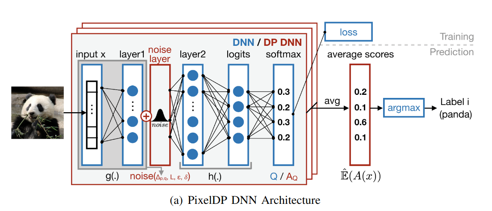
5 Restricted Threat Model Attacks
Decision-Based Adversarial Attacks: Reliable Attacks Against Black-Box Machine Learning Models
Story so far: gradient-based, score-based and transfer-based attacks
Definition (Decision-based attacks): Direct attacks that solely rely on the final decision of the model
Method: Initialize with an adversarial input $x_0 = x^\prime,$ make random walk according to a “proposal distribution”, trying to reduce $|x_k - x^*|$.
Performance: Requires (unsurprisingly) much more iterations of forward passes.
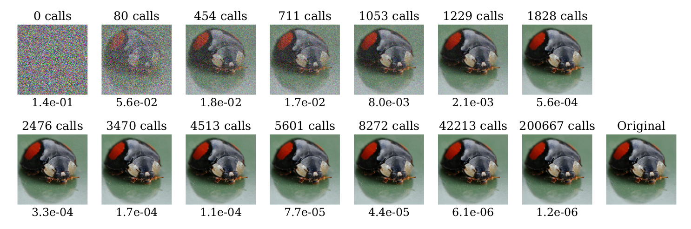
6 Generative Models
6.1 Variational Autoencoder (VAE) Background
- latent representation $z = Enc(x)$, and decoder/generator maps $z$ to $\hat x$. $\hat x = Dec(z)$.
- VAE aims to learn a latent representation for posterior distribution $p(z|x)$. Maximize loss function (minimize KL divergence):
$$
\begin{align}
\mathcal L_{VAE}&= \log p(x) - KL(q(z|x)|p(z|x))\notag\
&= \sum_z q(z|x) \log p(x) - \sum_z q(z|x) \log \frac{q(z|x)}{p(z|x)}\notag\
&= \mathbb E_{q(z|x)}[-\log q(z|x) + \log p(x,z)]\notag\
&= \sum_z q(z|x) \log \frac{p(z)}{q(z|x)} + \mathbb E_{q(z|x)} p(x|z)\notag\
&= -KL(q(z|x)|p(z)) + \mathbb E_{q(z|x)}p(x|z).
\end{align}
$$
7 Verifiably Robust Models
7.1 Interval Bound Propagation
- For input $x_0$ and logits $x_k$, we want worst case robustness in a neighbour of $x_0$:
$$ (e_y - e_{y_{true}})^T\cdot z_k \leq 0,\ \forall z_0 \in \mathcal X(x_0). \label{verify} $$
where $z_k = logits(z_0)$.
Consider $z_k = \sigma(h(z_{k-1}))$ with monotonic activation function $\sigma$, $\overline z_k = h(\overline z_{k-1})$ and $\underline z_k = h(\underline z_{k-1})$ .
Let $\overline z_0(\epsilon) = z_0 + \epsilon \mathbf 1$ and $\underline z_0(\epsilon) = z_0 - \epsilon \mathbf 1$.
Left hand size of $\ref{verify}$ is bounded by $\overline z_{k,y}(\epsilon) - \underline z_{k,true}(\epsilon)$. To minimuze this term, define: $$ z^*_{k,y}(\epsilon) = \begin{cases}\overline z_{k,y}(\epsilon)&\text{if } y\neq y_{true}\ \underline z_{k,y}(\epsilon)&\text{if }y = y_{true}\end{cases} $$
Then minimize hybrid training loss: $$ \mathcal L = \ell(z_k,y_{true}) + \alpha \ell(z^*_{k}(\epsilon), y_{true}) $$
8 Physical World Attacks
Synthesizing Robust Adversarial Examples
Expectation Over Transformation
To address the issue: adversarial examples does not keep adversarial under image transformations in the real world.
Minimize visual difference $t(x)-t(x^\prime)$ instead of $x-x^\prime$ in texture space
$$
\begin{align}
\arg\max_{x^\prime} \quad&\mathbb E_{t\sim T}[\log P(y_t|t(x^\prime))]\
\mathrm{s.t.} \qquad&\mathbb E_{t\sim T} [d(t(x^\prime), t(x))]<\epsilon\notag\
&x^\prime \in [0,1]^d\notag
\end{align}
$$
The distribution $T$ of transformations:
2D: $t(x) = Ax + b$
3D: texture $x$, render it on an object to $Mx +b$
Optimize the objective: $$ \arg\max_{x^\prime} \ \mathbb E_{t\sim T}\big[\log P(y_t|t(x^\prime)) - \lambda |LAB(t(x)) - LAB(t(x^\prime))|_2\big] $$
Fooling Automated Surveillance Cameras Adversarial Patches to Attack Person Detection
Patch Adversarial Attack: only structurally editing certain local areas on an image
A pipeline of patch attack
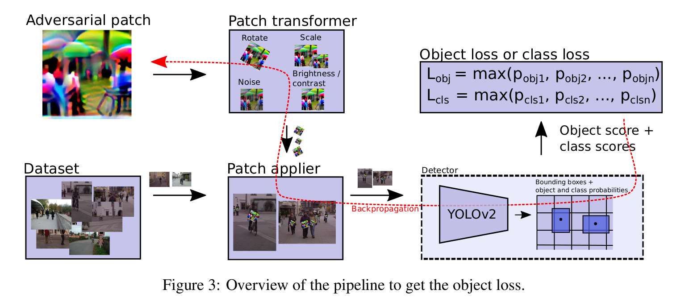
Hybrid Objectives:
$L_{nps}$ non-printability score
$L_{tv}$ the total variation loss. Force the image to be smooth. $$ L_{tv} = \sum_{i,j} \sqrt{(p_{i,j} - p_{i+1,j})^2 + (p_{i,j} - p_{i,j+1})^2} $$
$L_{obj}$ maximize the objectness $p(obj)$. Note that we can also use $L_{cls}$ (class score) or both.
Adversarial T-shirt! Evading Person Detectors in A Physical World
Thin Plate Spline (TPS) mapping
To learn transformations $t$ that maps each pixel $p^{(x)}$ to $p^{(z)}$.
Suppose $p^{(x)} = (\phi^{(x)}, \psi^{(x)})$, $p^{(z)} = (\phi^{(x)}+\Delta_\phi, \psi^{(x)}+\Delta_\psi)$.
According to TPS method, the only solution of $\Delta$ is given by: $$ \Delta(p^{(x)};\theta) = a_0 +a_1\phi^{(x)} + a_2 \psi^{(x)} + \sum_{i=1}^n c_i U(|\hat p_i^{(x)} - p^{(x)}|_2) \label{delta} $$ where the radial basis function $U(r) = r^2 \log r$ and $\hat p_i^{(x)}$ are $n$ sampled points on image $x$.
TPS resorts to a regression problem to determine $\theta$, in which the regression objective is to minimize the difference between $$ {\Delta(\hat p_i^{(x)};\theta)}{i=1}^n \quad \text{and} \quad {(\phi_i^{(z)}, \psi_i^{(z)}) - (\phi_i^{(x)},\psi_i^{(x)})}{i=1}^n $$
This results in an equivalent problem: $$ F\theta_\phi =\begin{pmatrix}K&P\P^T &0_{3\times 3} \end{pmatrix}\theta_\phi = \begin{pmatrix}\hat \Delta_\phi\ 0_{3\times 1}\end{pmatrix}^T $$ where $K_{ij} = U(|\hat p_{i}^{(x)} - \hat p_j^{(x)}|)$ $\theta_\phi = [c,a]$ and $P = [1, \hat \phi^{(x)}, \hat\psi^{(x)}]$.
(See Code for TPS for implementing details.)
Adversarial T-shirts generation
- The pipeline is similar as above. The major difference is the composited transformation adopted here.
- The overall transformation is given by:
$$ x_i^\prime = t_{env}(A + t(B - C+t_{color}(M_{c,i}\circ t_{TPS}(\delta + \mu v)))), t\sim \mathcal T, t_{TPS}\sim \mathcal T_{TPS}, v\sim \mathcal N(0,1) $$
- $A = (1-M_{p,i})\circ x_i$ yields the background region, $B = M_{p,i}\circ x_i$ is the human-bounded region.
- $C = M_{c,i}\circ x_i$ is the bounding box of T-shirt.
- $t_{color}$ is applied in place of non-printability loss.
- $t$ stands for conventional physical transformations, $t_{env}$ for brightness of the whole environment.
- Gaussian smoothing is applied by $v$ to the adversarial patch.
Can 3D Adversarial Logos Cloak Humans?
Various postures and multi-view transformations threatens the adversarial property of previous 2D adversarial patches
Overall pipeline: Detach 3D logos from person mesh as submeshes $\mathcal L$, then: $$ \tilde{\mathcal L} = \mathcal T_{logo}(S,\mathcal L) = \mathcal M_{3D}(\mathcal S, \mathcal M_{2D}(\mathcal L)) $$
Texture $\mathcal S$
$\mathcal M_{2D}$ maps a 3D logo to 2D domain $[0,1]^2$; $M_{3D}$ attach texture to 3D logo
Finally, render the 3D adv logo by differentiable renderer (e.g. Neural 3D Mesh Renderer) with human and background.
Loss
$$ \mathcal L_{adv} = \lambda \cdot DIS(\mathcal I, y) + TV(\tilde{\mathcal L}) $$
- DIS: disappearance loss = the maximum confidence of all bounding boxes that contain the target object
- TV: total variance: $TV(\tilde{\mathcal L}) = \sum_{i,j} (|R(\tilde{\mathcal L})_{i,j}- R(\tilde{\mathcal L})_{i,j+1}| + |R(\tilde{\mathcal L})_{i+1,j}- R(\tilde{\mathcal L})_{i,j}|)$ captures discontinuity of 2D adv logo. (Here $R$ stands for rendering.)
Adversarial Texture for Fooling Person Detectors in Physical World
Goal: to train an expandable texture that can cover any clothes in any size
Four methods: RCA, TCA, EGA, TC-EGA
9 Object Detection
9.1 YOLO
$S\times S$ grids, each containing $B$ anchor points with bounding boxes
Each anchor point: $[x,y,w,h,p_{obj}, p_{\ell1}, \dots, p_{\ell n}]$
$p_{obj}$: object probability. The prob. of containing an object.
$p_{\ell i}$: Class score, learned by SoftMax and cross entropy
Confidence of object: measured by $p_{obj} \times IOU$.
Confidence of class: measured by $p_{obj}\times IOU \times \Pr[\ell_i,|,obj]$
Yolo: Outputs [
batch,num_class+ 5$\times$num_anchors, $H\times W$]Yolov2: Outputs [
batch, (num_class+ 5)$\times$num_anchors, $H\times W$] (See details at below).
9.2 Region proposal network
- CNN generates anchors:
- For each pixel on the feature map (say 256 dimension with size H$\times W$), generate $k=9$ anchors.
- The height-weight ratio of these 9 anchors are 0.5, 1 or 2, each with three different size.
- Each pixel has $2k$ scores and $4k$ coordinates. Each anchor yields a foreground and a background score. Use softmax to decide where it is foreground or background.
- Meanwhile, use bounding box regression on each anchor. (Another branch)
- Finally, Proposal Layer takes sum over anchors and BBox regression.
- Sort these anchors by foreground softmax scores.
- Delete anchors that surpass too much from boundary.
- Use Non-maximum suppression to avoid multiple anchors on a single object. (Recursively choose the anchor with highest score and delete other anchors with high IOU against it.)
9.3 Bounding Box
Original bounding box $P(x,y,w,h)$, learn deformation $d(P)$ to approximate the ground truth $$ \hat G_x = P_w d_x(P)+P_x\
\hat G_y = P_h d_y(P)+P_y\
\hat G_w = P_w e^{d_w(P)}\
\hat G_h = P_h e^{d_h(P)}\
$$where $d(P) = w^T\phi(P)$. $\phi$ is the feature vector so we shall learn parameter $w$
9.4 ROI Alignment
- The proposed anchors have different size $(w,h)$, pool the corresponding feature map (with size $w/16,h/16$) to a fixed size $(w_p, h_p)$. In each of these $w_ph_p$ grids, do max pooling.
- Finally, apply FC layers to calculate class probability and use bounding box regression again.
10 Basic Graphics
10.1 Coordinates
World coordinates: $(x,y,z)$ means left, up and in.
- Azimuth: 经度角
Camera Projection Matrix $K$ (intrinsic parameters of a camera) $$ \lambda \begin{pmatrix}u\v\1\end{pmatrix} = \begin{pmatrix}f&&p_x\&f&p_y\&&1\end{pmatrix}\begin{pmatrix}X\Y\Z\end{pmatrix} = K\mathbf X_c $$
- From 3D world (metric space) to 2D image (pixel space)
Coordinate transformation from world coordinate $\mathbf X$ to camera coordinate $\mathbf X_c$: $$ \mathbf X_c = R\mathbf X + t = \begin{pmatrix}\mathbf R_{3\times 3} &\mathbf t_{3\times 1}\end{pmatrix}\begin{pmatrix}\mathbf X\1\end{pmatrix} $$
10.2 Obj format
- vertex: 3D coordinate. In format:
v x y z - vertex texture: 2D coordinate in texture figure. In format:
vt x y - vertex normal: normal direction. In format:
vn x y z - face. In format:
f v1/vt1/vn1 v2/vt2/vn2 v3/vt3/vn3. - See examples here
10.3 Pytorch3d
load an object
verts, faces, aux = load_obj(obj_dir)- OR
mesh = load_objs_as_meshes([obj_dir], device)
Mesh: Representations of vertices and faces
List | Padded | Packed
$[[v_1],\dots, [v_n]]$ | has batch dimension | no batch dimension, index into padded representatoin
e.g.
vertex = mesh.verts_packed()
Mesh.textures:
Three possible representations:
TexturesAtlas (each face has a texture map)
- (N,F,R,R,C): each face use $R\times R$ grid
TexturesUV: a UV map from vertices to texture image
TexturesVertex: a color for each vertex
#for uv: mesh.textures.verts_uvs_padded() #for TexturesVertex: rgb_texture = torch.tensor([1,vertex.shape[0], 3]).uniform_(0,1) mesh.textures = TexturesVertex(vertex_features = rgb_texture)
10.4 Render
- Luminous Flux: $dF = dE/(dS\cdot dt)$.
- Radiance: $I = dF/d\omega$. (立体角)
- Conservation:
- $I_i = I_d + I_s + I_t +I_v$.
- Diffuse light: $I_d = I_i K_d (\vec L\cdot\vec N)$
- where $\vec L$ is the orientation of the initial light and $\vec N$ is the normal orientation.
- Specular light: $I_s = I_i K_s(\vec R \cdot \vec V)^n$
- where $\vec R$ is the reflective light and $\vec V$ is the direction of view.
- Ambient light: $I_a = I_i K_a$.
- Shading
- Gouraud: Color interpolation (barycentric interpolation)
- Phong: Normal vector interpolation
11 Others
11.1 Entropy, KL divergence
Entropy $H(X) = -\sum_{x\in X}p(x)\log p(x)$.
Cross entropy $XE(p,q) = \mathbb E_p (-\log q)$.
The distance between two distributions $p$ and $q$ can be measured by: $$ KL(p|q) = \sum_{x\in X}p(x)\log \frac{p(x)}{q(x)} = XE(p,q) - H(p), $$ which represents the information loss of describing $p(x)$ by $q(x)$.
Mutual Information: $\mathbb I(X;Y) = KL(p(X,Y)|p(X)p(Y))$.
11.2 Statistics
- Accuracy = $\frac{TP+TN}{TP+TN+FP+FN}$
- Precision = $\frac{TP}{TP+FP}$
- Recall = $\frac{TP}{TP+FN}$
- PR-curve: traverses all outoffs to get a tradeoff curve of precision and recall
12 Experiments
FGSM, BIM, Carlini & Wagner attacks
Adversarial Training
- FGSM adversarial training

| Accuracy | FGSM ($ e=4/255$) | CW ($ e = 4/255,a= 0.01, K = 10$) | |
|---|---|---|---|
| 75999.pth | 0.817 | 0.6634 | 0.099 |
- Adversarial Texture:
- TCA-1000epoch: AP = 0.6395
- TCEGA-2000,1000: AP = 0.4472
- TCEGA-HSV-red-2000,1000: AP = 0.6951
- TCEGA-Gaussian-2000,1000: AP = 0.4916
Pytorch3d Experiments
Adv_3d
- Differentiable Rendering + original adv_patch pipeline
- MaxProbExtractor: Only optimize the box with max iou!
Issues:
- Parrallel
- solved by modifying detection/transfer.py
- may introduce problems of space redundancy
- Config now: batch size = 2, num_views = 4, any bigger batch size causes cuda out of memory
- 10 minutes/batch
- Project a [3,H,W] cloth to TextureAtlas
- try TextureUV, but the projection from texture.jpg to TextureUV seems not differentiable
- Add more constraints?
- Ensemble learning
Experiment1: Batch: $2\times 4$, lr = 0.001, attack faster-rcnn
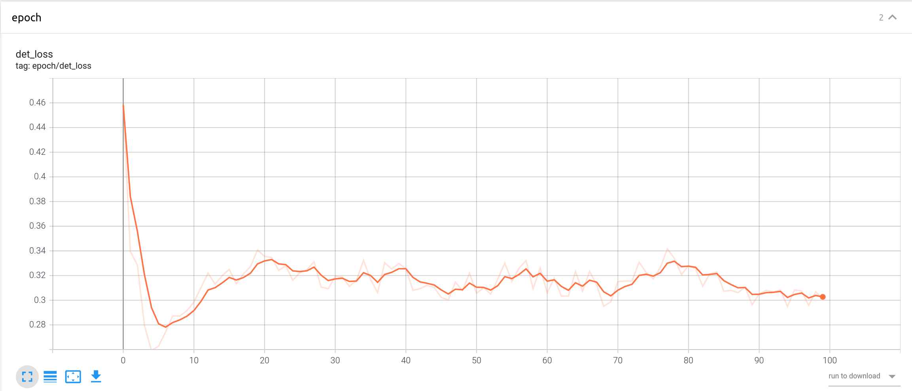
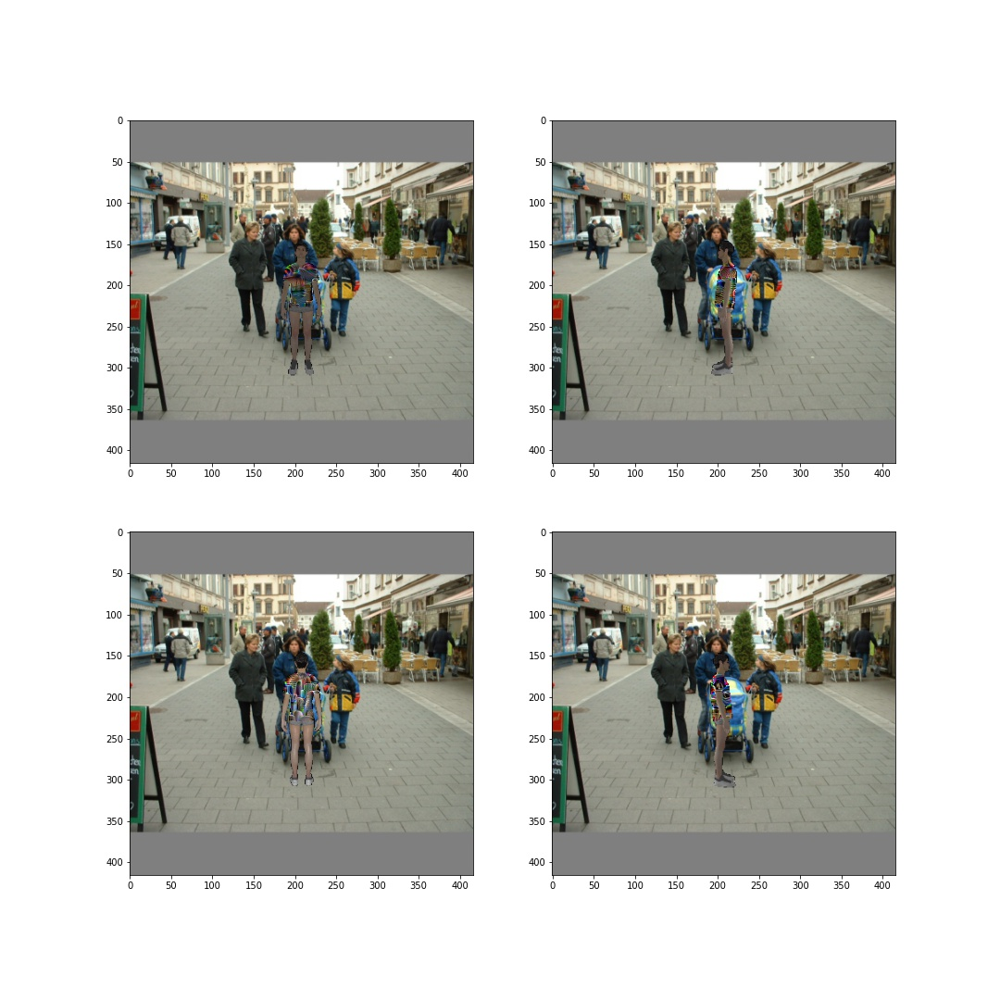
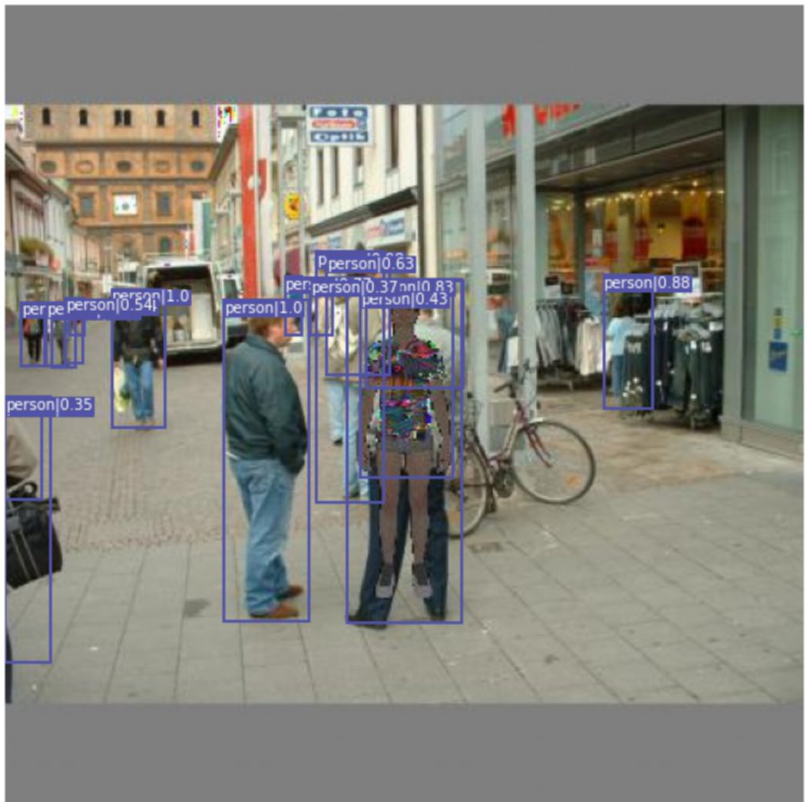
The tendency of attacking two-stage detectors such as faster-rcnn: split boxes to smaller ones
MaxProbExtractor: Only to attack the box with max iou may sacrifice those boxes with smaller iou but much higher probability? (Failed, the current method works great enough)
- now: iou threshold 0.4, prevent over-optimizing on trivial boxes.
- try attacking the box with max confidence = iou $\times$ prob?
We now take the mean of gradient over $B$ pictures. Why not try weighted mean (e.g. $\ell_2$) or other loss functions (e.g. $\sum e^{prob}$) to urge the trainer to attack the largest max_prob boxes?
Model placed in the middle of the picture (Overfit?) (Usually not a problem here)
8.28: I observe that over the parameters in the shape of [1,6906,8,8,3], only 3.49% of them (46333) deviate from original setup 0.5 (for grey). Over the trained parameters, 18.7% of them go beyond the [0,1] range.
8.31 I render the patch trained by 4 viewing points (0,90,180,270), it turns out that a small deviation from these angles would make the rendered picture almost completely grey:
- It turns out that this is due to the Atlas expression of texture
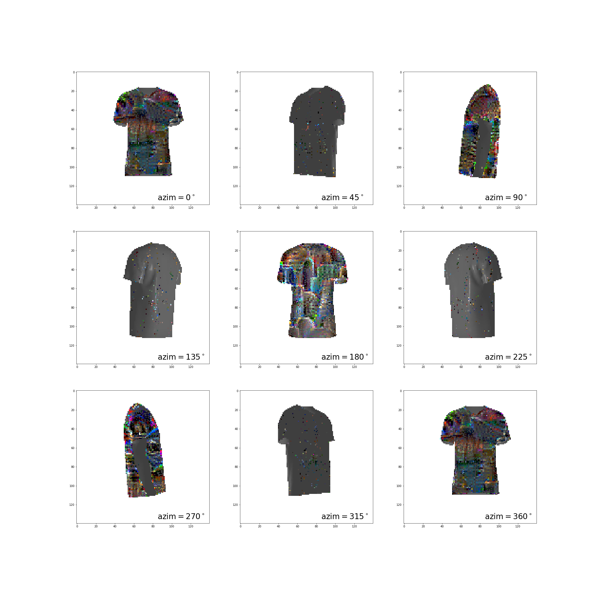
8.31 I try 50% droppout on the adv patch (a random 0/1 mask of size 6000):
- 100%： recall = 0.10, 80%: recall = 0.32, 50%: recall = 0.89. (fail)
9.1 experiment4: random angles (163937) (fail)
parameters 87.59% trained
没有形成完整连续的图像，几乎没有对抗效果 (recall = 0.96)，但loss一直在0.3上下
I fixed the viewing angles for each epoch, so perhaps the tshirt is trained only adversarial for those views at end of each epoch. (fixed later in experiment 7)

9.4 experiment5: vec2atlas, R = 8. (Map $(3,V)$ to atlas $(1,V,R,R,3)$ before the previous pipeline).
- recall = 0.20
9.3 experiment6: vec2atlas, R=2.
- Reducing parameter $R$ does not influence the quality of the rendered pics much, but save memory and time.
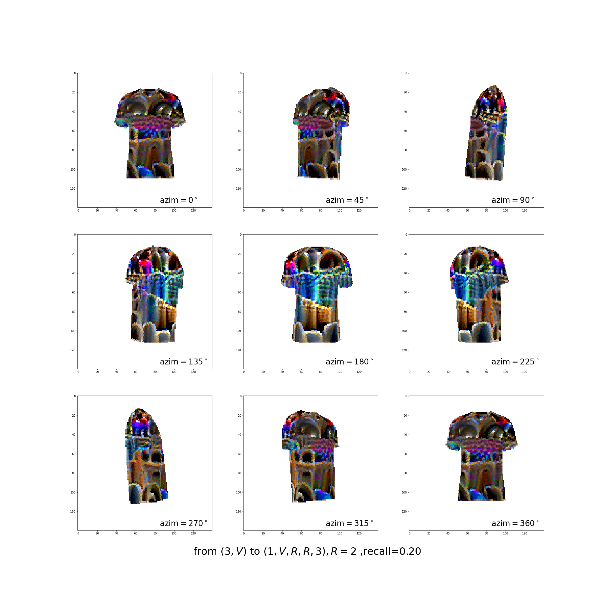
it seems that R=8 introduces too much parameters for a normal tshirt
experiment7: R=2, random angle, switch every 20 iterations, vec2atlas

Loss curve for random angle sampling - It turns out that random sampling takes about three times the epoches to converge as using fixed angles, but the figure below demonstrates the failure of the latter option on universal angles.
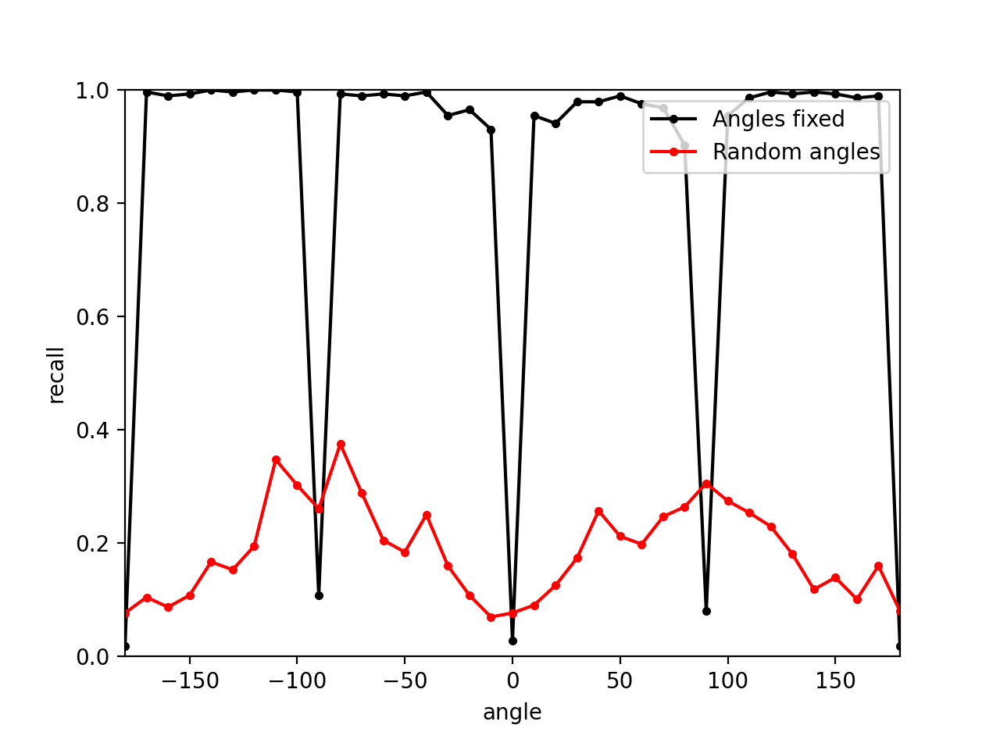
9.5 experiment 8： 尝试不均匀地sample角度，因为之前 random angles 均匀采样（as the red line shows）会导致面积较小的衣服侧面对抗性较低
- evaluate the model once every 5 epoches, divide the $360^\circ$ angles into 36 intervals and estimate the loss $\ell_i$ in each interval.
- Sample $azim \leftarrow D$, where $D(i) = \exp (\alpha\ell_i) / \sum_i \exp (\alpha\ell_i) $
9.7 I test the performance of different $\alpha$. Since the final loss ranges from 0.1 to 0.25, I try $\alpha = 10, 15, 20$ so that the ratio of sampling probability is about $\sim 10$.
- $\alpha = 10$ is too weak to be efficient; while $\alpha = 20$ is too aggressive to converge.
- $\alpha = 15$ is balancing.
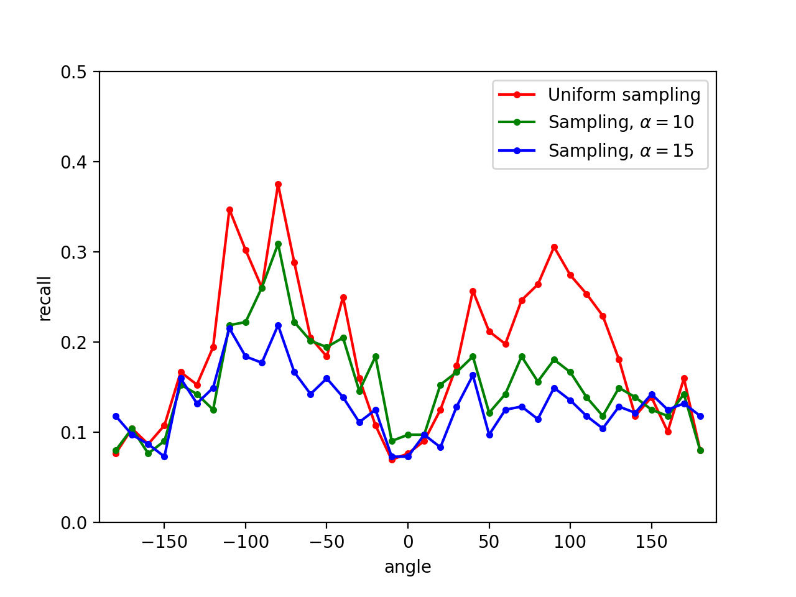
9.9 I regenerate an obj file for Tshirt using meshlab.
- Details: Set up 4 cameras (at 0,90,180,270 degree) and auto-generate the maps from mesh to texture.
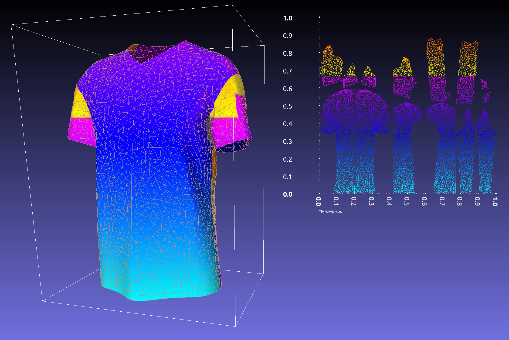
9.10 Map the $(3,V)$ vector to the uv texture.
Details: Draw a monochrome triangle on the texture for each face according to $(3,V)$
The expressive power of uv texture is much stronger than $(3,V)$. The reverse mapping thus requires more restriction.
Render from the texture again using the UV map.
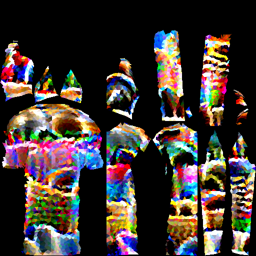
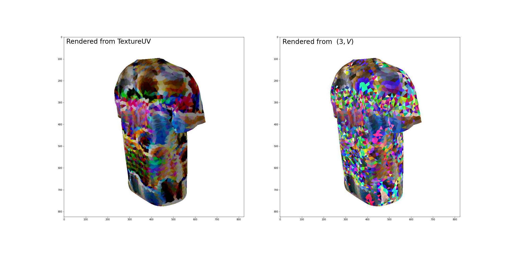
The uv-rendered tshirt is smoother in color but much less adversarial than the atlas-rendered one.It is necessary to create a precise mapping from UV to Atlas, which would enable the pipeline of training an adversarial uv texture.
An observation is that the lateral part of the uv-rendered tshirt gives lower recall, which is counterintuitive since the lateral part usually performs worse than other angles with less surface area.A possible (yet not necessarily true) explanation: the task of the lateral parts is harder so it is trained more robust to random deviations.(9.12) Combining two meshes using uv texture causes conflicts: mesh of man cloaks the mesh of tshirt
This bug is due to incompatible texture size of two meshes. Fixed. (9.16)
Transfer uv texture back to $(3,V)$ by interpolation (3% deviation from original $(3,V)$ representation).
9.15 Enables the fast transfer from (3,V) to 2d texture in pipeline and calculate the corresponding TV loss of the 2d texture.
loss = det_loss + a * tv_loss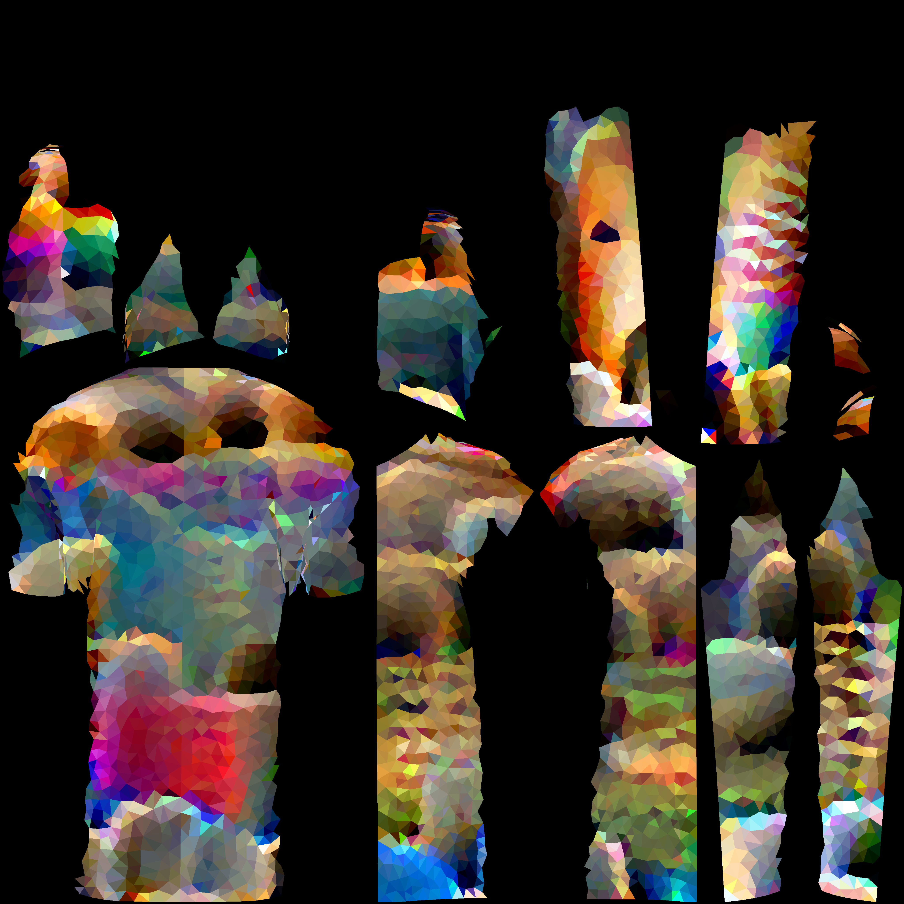
- Details:
uv = vec[:,maps[:,:]]
- Details:

Current Pipeline:

Next step: to enable the rendering process directly from TextureUV.
- Replaces TextureAtlas and (3,V) with TextureUV
- Facilitates direct modification on Tshirt cloth
9.16 Merge multiple pieces of texture maps into one.
- Details: Regenerate an obj. for man with nonoverlapping texture map.
- Load the origin obj. file using atlas and transform it into (3,V) form.
- Read the new obj. file by hand and draw each faces using PIL.draw.
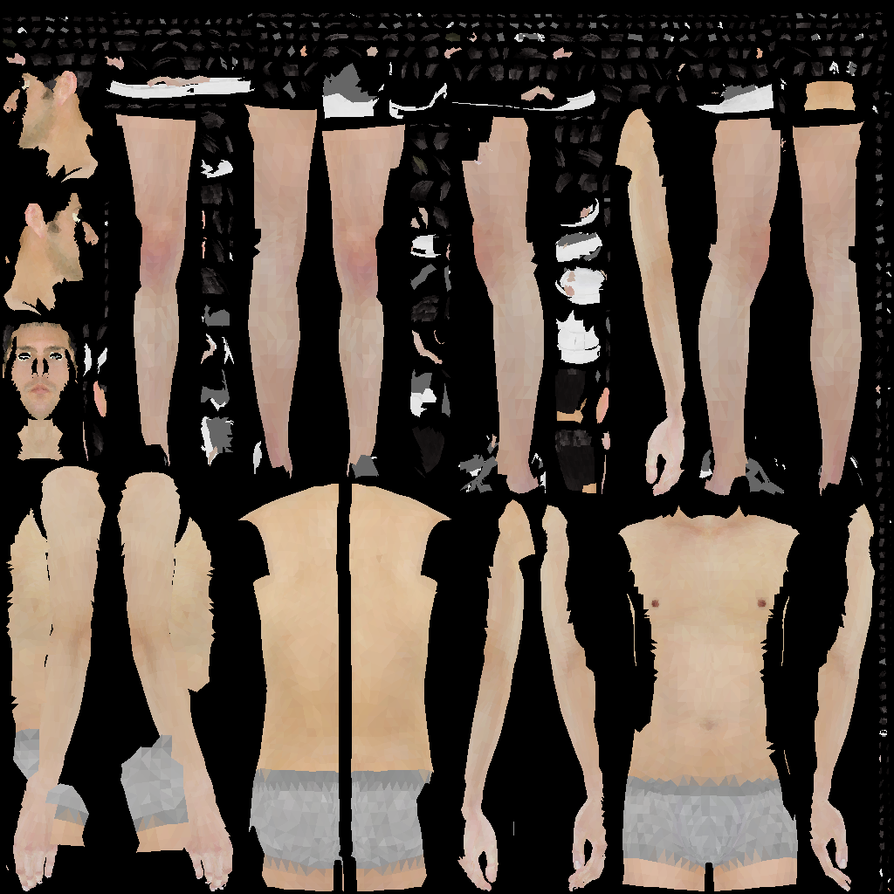
Pipeline:
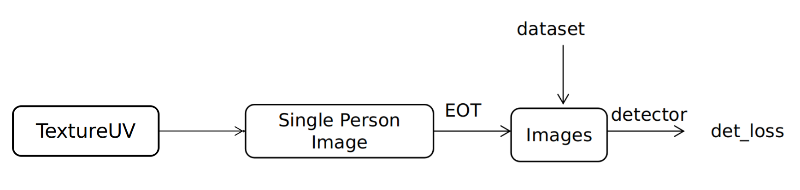
Results:

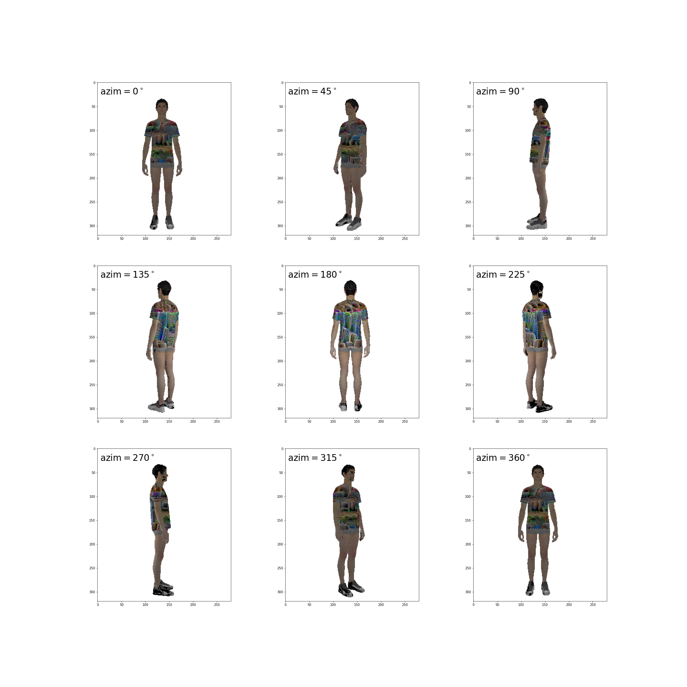
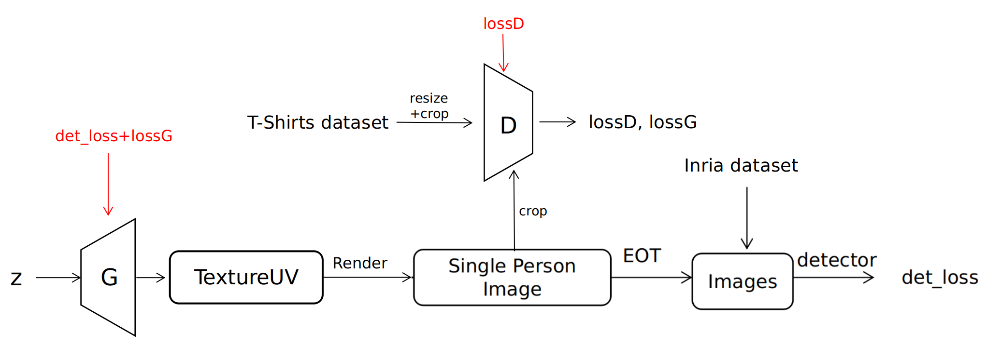
- Collect data of fashionable T-shirts (about 1300 tshirt clean images)
- Use WGAN to generates TextureUV similar to normal T-shirts
- $z\in \mathbb R^{128}$, sampled from $\mathcal N(0,I)$.
- May require training of $z$.
- Problems: GAN 不稳定, 且 generator 学不到数据中的style
- 数据集style更集中
- VAE reconstruction，then train latent vector for adversarial loss
Code: Adversarial Texture
1 training_texture.py (Main)
- adversarial cloth:
[1(batch),3(RGB),width, height] - Random Crop Attack (RCA), Toroidal Crop Attack (TCA) differs only at
random_crop
2 tps_grid_gen.py (TPS)
Initialize: Using a $N\times 2$ array, denoting the $N$ target control points. Then construct the TPS kernel matrix as shown above.
target_control_points: $\hat p_i^{(x)}, i =[1,\dots, 25]$.source_control_pointis sampled with small disturb fromtarget_control_points, which stands for $\hat p_i^{(z)}$.source_coordinate = self.forward(source_control_points).forward function calculates $$ F^{-1}\begin{pmatrix}\hat\Delta_{(\phi,\psi)}\0_{3\times 2}\end{pmatrix}^T = [\theta_\phi,\theta_\psi] $$
Then calculate
source_coordinateby equation $\ref{delta}$.
mapping_matrix = torch.matmul(Variable(self.inverse_kernel), Y)
source_coordinate = torch.matmul(Variable(self.target_coordinate_repr), mapping_matrix)
- Finally, use
F.grid_sampleto map the adversarial patch tosource_coordinate.
3 load_data.py
3.1 MaxProbExtractor
Extracts max class probability from YOLO output.
YOLOv2 output: [
batch, (num_class+ 5)$\times$num_anchors, $H\times W$]num_class+ 5 = 85.0~3: x,y,w,h
4: confidence of this anchor (objectness)
5~84: class probability $\Pr[class_i|obj]$ of this anchor
for
func = lambda obj,cls:obj, we only minimize the maximum objectness confidence.
4 random_crop
Crop type:
- None: used for RCA, TCA crop
5 Patch transformer
- randomly adjusting brightness and contrast, adding random amount of noise, and rotating randomly
adv_batch = adv_batch * contrast + brightness + noise- The training label: (N, num_objects, 5).
- Output: (N, num_objects, 3, fig_h, fig_w)
Paper List
Most parts of this paper list is borrowed from Nicholas Carlini’s Reading List.
Preliminary Papers
==Evasion Attacks against Machine Learning at Test Time== ==Intriguing properties of neural networks== ==Explaining and Harnessing Adversarial Examples==
Attacks [requires Preliminary Papers]
==The Limitations of Deep Learning in Adversarial Settings== DeepFool: a simple and accurate method to fool deep neural networks ==Towards Evaluating the Robustness of Neural Networks==
Transferability [requires Preliminary Papers]
==Transferability in Machine Learning: from Phenomena to Black-Box Attacks using Adversarial Samples== Delving into Transferable Adversarial Examples and Black-box Attacks ==Universal adversarial perturbations==
Detecting Adversarial Examples [requires Attacks, Transferability]
==On Detecting Adversarial Perturbations Detecting Adversarial Samples from Artifacts Adversarial Examples Are Not Easily Detected: Bypassing Ten Detection Methods==
Restricted Threat Model Attacks [requires Attacks]
ZOO: Zeroth Order Optimization based Black-box Attacks to Deep Neural Networks without Training Substitute Models ==Decision-Based Adversarial Attacks: Reliable Attacks Against Black-Box Machine Learning Models== Prior Convictions: Black-Box Adversarial Attacks with Bandits and Priors
Verification [requires Introduction]
Reluplex: An Efficient SMT Solver for Verifying Deep Neural Networks On the Effectiveness of Interval Bound Propagation for Training Verifiably Robust Models
Defenses (2) [requires Detecting]
Towards Deep Learning Models Resistant to Adversarial Attacks ==Certified Robustness to Adversarial Examples with Differential Privacy==
Attacks (2) [requires Defenses (2)]
==Obfuscated Gradients Give a False Sense of Security: Circumventing Defenses to Adversarial Examples== Adversarial Risk and the Dangers of Evaluating Against Weak Attacks
Defenses (3) [requires Attacks (2)]
Towards the first adversarially robust neural network model on MNIST On Evaluating Adversarial Robustness
Other Domains [requires Attacks]
Adversarial Attacks on Neural Network Policies Audio Adversarial Examples: Targeted Attacks on Speech-to-Text Seq2Sick: Evaluating the Robustness of Sequence-to-Sequence Models with Adversarial Examples Adversarial examples for generative models
Detection
Rich feature hierarchies for accurate object detection and semantic segmentation ==You Only Look Once: Unified, Real-Time Object Detection== ==YOLO9000: Better, Faster, Stronger==
Physical-World Attacks
==Adversarial examples in the physical world== ==Synthesizing Robust Adversarial Examples== Robust Physical-World Attacks on Deep Learning Models ==Adversarial T-shirt! Evading Person Detectors in A Physical World== Universal Physical Camouflage Attacks on Object Detectors ==Fooling Automated Surveillance Cameras Adversarial Patches to Attack Person Detection== ==Can 3D Adversarial Logos Cloak Humans?== ==Adversarial Texture for Fooling Person Detectors in Physical World==
Ideas
- Difference from 3D logo? (What’s our goal?)
- Restricted deformation or recoloring from any input cloth?
- Differential deformation of logo (by B-spline?)
- monochromatic, analogous, or complementary colors
我们现在是优先attackiou最大的框，然后小于一定iou threshold的就不训练了，防止过度训练到一些trivial的boxes
牺牲了一些iou比较小但是prob比较大的框，能不能把周围有人的情况下，把周围的人也隐藏起来
object confidence=iou和prob 效果不好
B个角度的取梯度的平均值，weighted mean去加速优先attack
2D的pipeline 饱和度 hsv
色相饱和度亮度
参数化 gan